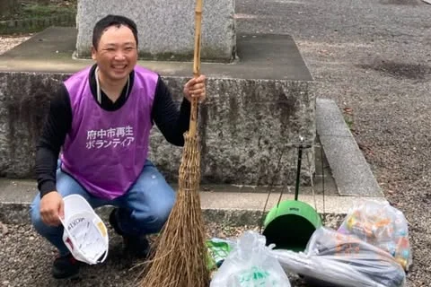
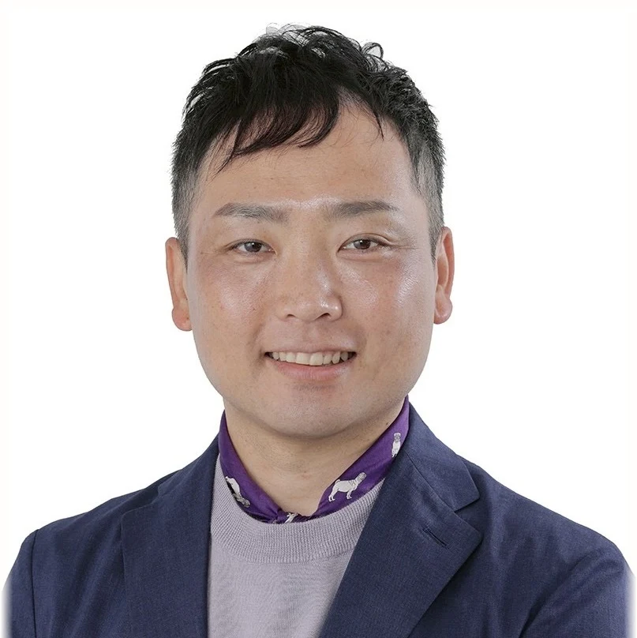
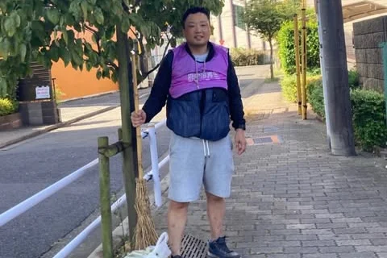
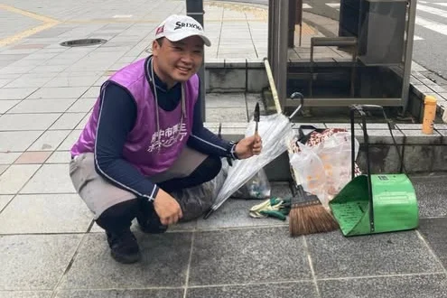
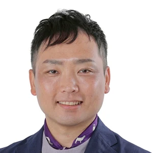

まちを、きれいに。
毎週土曜の朝は団体清掃、平日は個人でも。駅前のロータリー、通学路、神社の境内。1年以上、続けています。
暮らしを守る、交通のプロ。
毎週、まちの清掃からはじめています。

毎週土曜日の朝は、地域のみなさんとの清掃活動からはじまります。平日も、駅前や通学路で気になった場所があれば、ほうきを持って向かいます。
1年以上続けるうちに、通学中の子どもたちが「ありがとう」と声をかけてくれるようになりました。近所の方から、そっと飲み物をいただくこともあります。特別なことをしているつもりはありません。まちの困りごとは、現場に立たないと見えてこない――交通コンサルタントとして20年、道路や駅前広場の計画に携わってきた経験も、原点は同じです。
大きな言葉を並べるより、続けてきた事実を見ていただきたい。活動は毎週、SNSでご報告しています。
肩書きではなく、手を動かすこと。府中のまちで続けている3つの活動です。

毎週土曜の朝は団体清掃、平日は個人でも。駅前のロータリー、通学路、神社の境内。1年以上、続けています。

小学校の通学路にのびた雑草の処理も、交通の専門家の仕事のうち。見通しのよい道は、子どもたちの安全につながります。

天気が崩れて団体清掃が中止になった日も、あがった頃合いをみて、ひとりで駅前へ。続けることが、いちばんの信頼だと思っています。
このほか、援農ボランティアとして武蔵野・府中・三鷹の農家のお手伝いも始めました。畑や水田の保水力は、まちの防災力でもあります。
児童養護施設から巣立つ若者への家電支援は、「家電寄贈のお願い」をご覧ください。
再開発でビルが建つとき、車と人の流れがどう変わるか。それを計算し、道路や交通施設への影響を評価して、行政や交通管理者と協議を重ねる――そんな交通コンサルタントの仕事を、2006年から20年続けてきました。2012年には株式会社都市交通企画(武蔵野市)の設立に加わり、取締役として経営に携わっています。
渋滞も、通学路の安全も、バスの本数も、駅前の使いやすさも。交通は、毎日の暮らしそのものです。
今週どこを掃除したか、誰と会って、何を教わったか。飾らない週報を、InstagramとXで毎週発信しています。ぜひのぞいてみてください。

村越 淳太むらこし じゅんた
まもなく府中市へ。府中のまちで育つ。
その後、私立和光高等学校・和光大学経済学部経済学科へ。
株式会社都市・交通企画(千代田区)に入社。再開発に伴う交通量の算定・影響評価・行政協議に携わる。
勤務先(株式会社都市・交通企画)とは別の会社を武蔵野市に設立し、取締役として交通コンサルティングを続ける。
児童養護施設から巣立つ若者へ、リユース家電・家具を届ける事業に参画。
再生の道 府中市ボランティアとして、清掃活動・援農・地域の発信を続けている。
使わなくなった家電が、若者の新生活の力になります。
認定NPO法人プラネットカナール(村越が副理事長を務めています)では、児童養護施設から巣立つ若者の新しい暮らしに、リユース家電・家具を届けています。いま、寄贈いただける家電が足りていません。ご自宅に眠っている家電・家具がありましたら、フォームから対象品目をご確認のうえ、お知らせください。
※ 本件は認定NPO法人プラネットカナールの事業であり、村越じゅんた個人およびその政治活動への寄附ではありません。お申込み・お問い合わせは同法人が受け付けます。